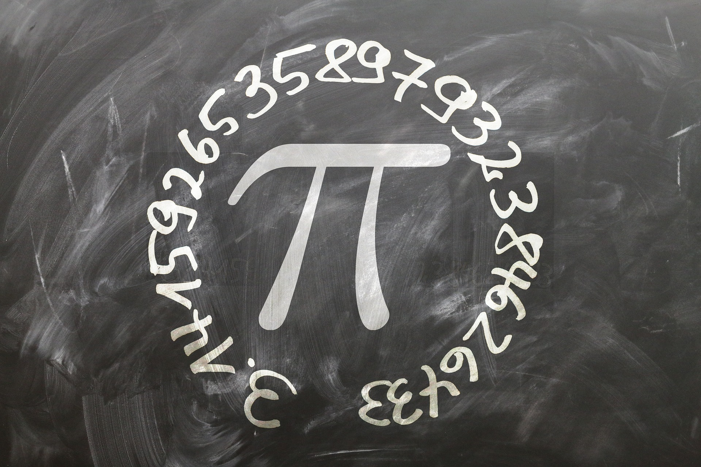
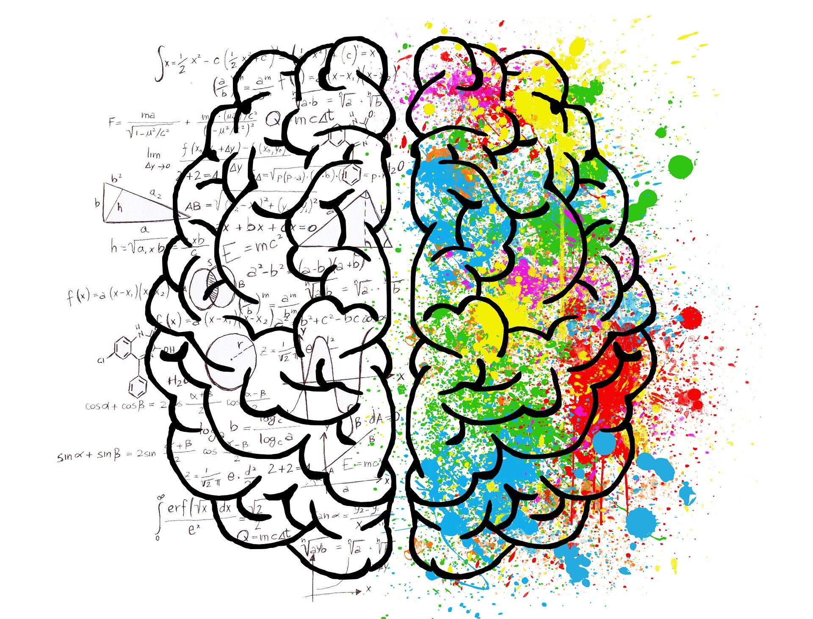
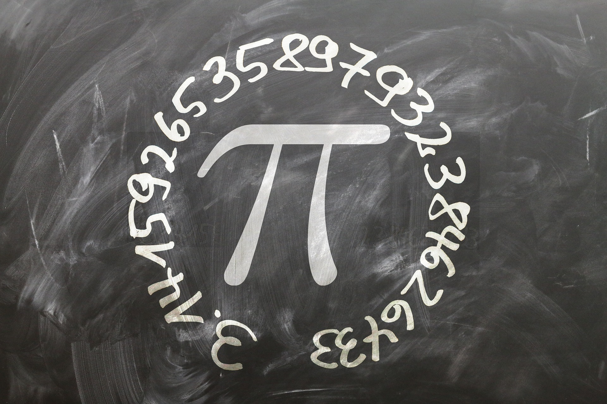
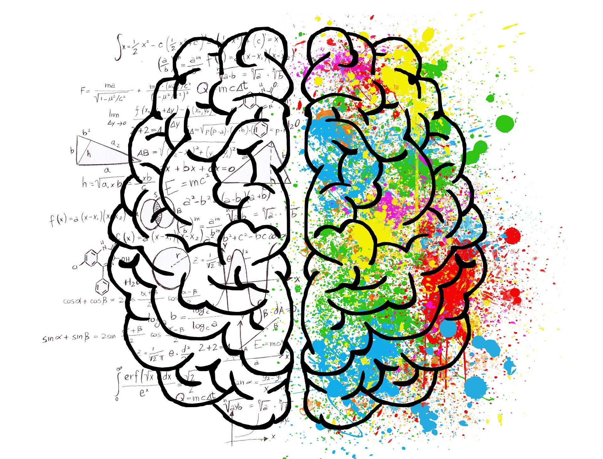
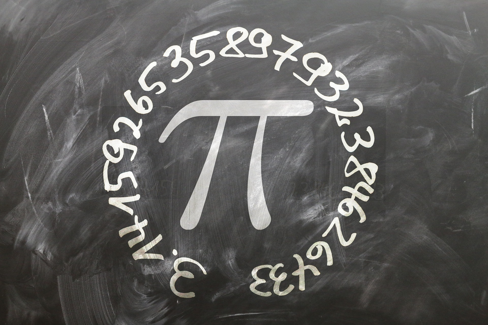
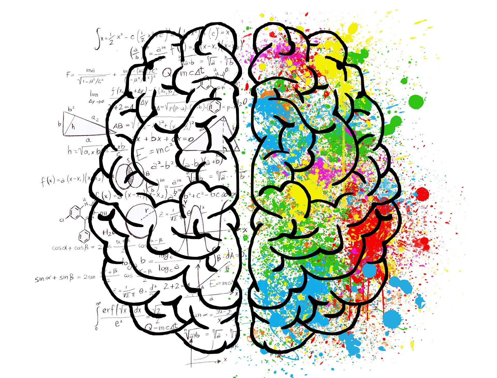
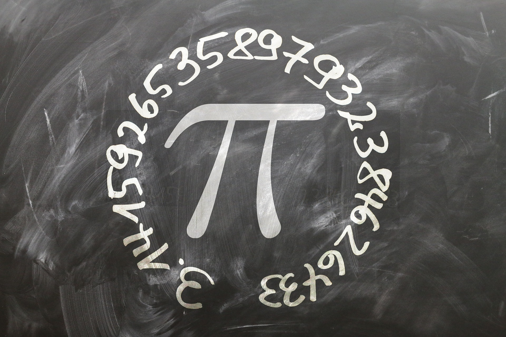
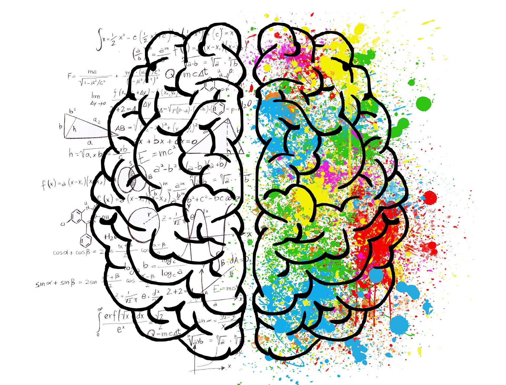

 



“Yatha Shikha Mayuranam, Naganam Manayo Yatha,
Tadvedanga Shastranam, Ganitam Nurdhni Samsthita.”
Mathematics develops computational skills, critical thinking, and problem solving skills. The theory, discipline, and techniques taught in mathematics courses are especially important in today's society. The faculty of the Department of Mathematics recognizes this and strives to ensure that the student obtains this knowledge. At the same time, the faculty contributes to the discipline by fundamental research in pure and applied mathematics.
| S.No | Teachers Name | Designation | Qualifications |
| 1 | DR JAGMOHAN RAI | Associate Professor | MSc., M.Phil, PhD |
| 2 | MS UDITA AGRAWAL | Associate Professor | MA, M.Phil |
| 3 | SH HARI PRATAP | Associate Professor | MA, M.Phil |
| 4 | SH ADITYA PRATAP SINGH | Associate Professor | MSc. |
| 5 | DR DEEPAK KUMAR PORWAL | Associate Professor | MSc., M.Tech |
| 6 | DR UDAY SHARMA | Associate Professor | MA, PhD |
| 7 | DR KAMINI RAWAT | Associate Professor | MSc., PhD |